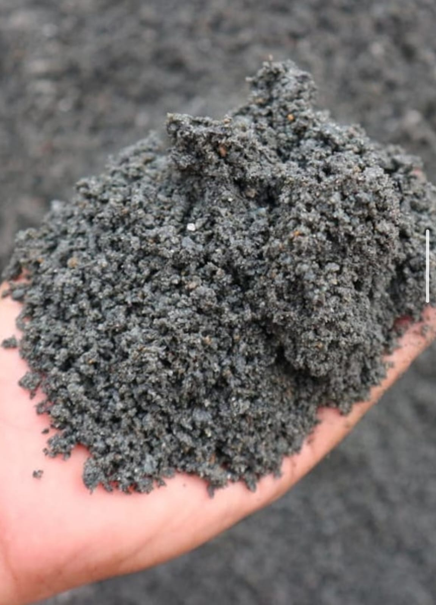

photo_library Lini Produk

Keramik Heavy Duty

Batu Split

Batu Belah

Pasir
Penyediaan material konstruksi, industri, dan perlengkapan alat tulis kantor (ATK) berkualitas untuk proyek skala kecil hingga besar. Kami menawarkan rantai pasok terintegrasi dengan harga kompetitif, pengiriman tepat waktu, dan produk bersertifikasi SNI — mendukung kelancaran pembangunan dan operasional bisnis Anda.
Keramik Heavy Duty
Batu Split
Batu Belah

Pasir

Abu Batu

Bangka Cream

Cilegon Cuci

Kertas & Alat Tulis

Perlengkapan Kantor

Paket ATK Lengkap

Wet Floor Sign

Brankas Anti Api

Alat Kebersihan Cleaning Service
Dokumentasi stok batu alam — material pilihan untuk kebutuhan konstruksi dan landscaping dengan kualitas terbaik.
Baja Ringan & Atap
Rangka baja ringan (truss), reng, spandek, genteng metal, insulasi atap — ringan, anti karat, dan presisi.
Material Bangunan Umum
Semen, mortar, hebel (bata ringan), triplek, sealant, pagar BRC, mur baut — kebutuhan konstruksi lengkap.
Batu & Pasir
Batu split berbagai ukuran, batu belah untuk pondasi & talud, batu alam untuk landscaping, abu batu, pasir Bangka Cream, pasir Cilegon Cuci — material tambang berkualitas untuk segala kebutuhan konstruksi.
Keramik Heavy Duty
Keramik lantai heavy duty untuk area industri, gudang, dan pabrik — tahan beban berat, anti gores, berbagai pilihan warna. Tersedia ukuran 9x20 cm dan custom.
Alat Tulis Kantor (ATK)
Kertas HVS A4/F4, pulpen, pensil, spidol, stapler, map folder, ordner, sticky notes, amplop, lakban, cutter, gunting, dan perlengkapan tulis kantor harian.
Perlengkapan Kantor & Printer
Tinta printer, toner cartridge, pita printer, continuous form, nota komputer, kertas thermal, stempel, bantalan stempel, brankas anti api, wet floor sign, dan kebutuhan administrasi lainnya.
Produk Bersertifikasi
Material berstandar SNI dan sertifikasi pabrik — kualitas terjamin untuk keamanan & ketahanan proyek Anda.
Stok & Logistik
Gudang strategis di Jakarta dengan armada pengiriman sendiri — material bangunan dan ATK sampai di lokasi sesuai jadwal.
Konsultasi Teknis
Tim ahli siap membantu rekomendasi spesifikasi material yang tepat sesuai kebutuhan struktur proyek Anda.
Dapatkan penawaran harga terbaik untuk kebutuhan material konstruksi dan alat tulis kantor Anda — kami siap supply dalam jumlah besar maupun kecil.